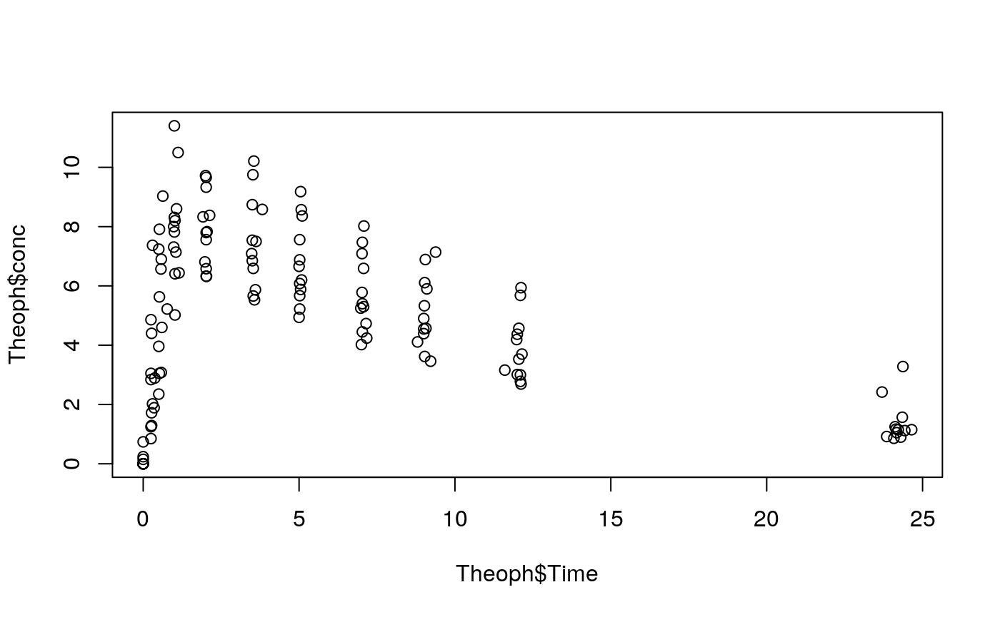

nca_analysis_example.rmd#Install libraries
##
## Attaching package: 'dplyr'## The following objects are masked from 'package:stats':
##
## filter, lag## The following objects are masked from 'package:base':
##
## intersect, setdiff, setequal, union#Check out Theoph data and prepare data for NCA
## Grouped Data: conc ~ Time | Subject
## Subject Wt Dose Time conc
## 1 1 79.6 4.02 0.00 0.74
## 2 1 79.6 4.02 0.25 2.84
## 3 1 79.6 4.02 0.57 6.57
## 4 1 79.6 4.02 1.12 10.50
## 5 1 79.6 4.02 2.02 9.66
## 6 1 79.6 4.02 3.82 8.58
## NULL#we need nominal time variable for some tasks.
NTAD <- c(0,0.3,0.5,1,2,4,5,7,9,12,24)
Theoph1 <- Theoph %>%
mutate(NTAD=metrumrg::snap(Time, NTAD)) %>%
mutate(Subject=as.numeric(as.character(Subject))) #converting from factor to numeric#Calculate Cmax and Tmax
ctmax <- Theoph1 %>%
group_by(Subject) %>%
#Subject in Theoph are ordered factor, but factors are not in ascending order
do(calc.ctmax(.,timevar="Time",depvar="conc")) %>%
ungroup()
head(ctmax)## # A tibble: 6 x 3
## Subject cmax tmax
## <dbl> <dbl> <dbl>
## 1 1 10.5 1.12
## 2 2 8.33 1.92
## 3 3 8.2 1.02
## 4 4 8.6 1.07
## 5 5 11.4 1
## 6 6 6.44 1.15#Calculate half-life
th = Theoph1 %>%
group_by(Subject) %>%
do(est.thalf(.,timevar="Time",depvar="conc",includeCmax="Y")) %>%
ungroup()
head(th)## # A tibble: 6 x 10
## Subject no.points intercept lambda_z r.squared adj.r.squared start_th
## <dbl> <dbl> <dbl> <dbl> <dbl> <dbl> <dbl>
## 1 1 3 2.37 0.0485 1.000 1.000 9.05
## 2 2 4 2.41 0.104 0.997 0.996 7.03
## 3 3 3 2.53 0.102 0.999 0.999 9
## 4 4 3 2.59 0.0993 0.999 0.998 9.02
## 5 5 4 2.55 0.0866 0.999 0.998 7.02
## 6 6 3 2.11 0.0916 0.999 0.998 9.22
## # ... with 3 more variables: end_th <dbl>, thalf <dbl>, includeCmax <chr>#Corrections of missing time and concentrations
## 3. Correct deviations
#let's say we want AUC0-8. We only have 7 and 9 hr concentrations, so we need to interpolate conc for 8 hr.
tc = Theoph1 %>%
group_by(Subject) %>%
do(correct.time(.,nomtimevar="NTAD",timevar="Time",depvar="conc",
tau=,tstart=,tend=,teval=8,th=th,reg="sd")) %>%
do(correct.conc(.,nomtimevar="NTAD",tau=,tstart=,tend=,teval=8,
th=th,reg="sd",ss="n")) %>%
ungroup() ## Joining, by = "Subject"
## Joining, by = "Subject"
## Joining, by = "Subject"
## Joining, by = "Subject"
## Joining, by = "Subject"
## Joining, by = "Subject"
## Joining, by = "Subject"
## Joining, by = "Subject"
## Joining, by = "Subject"
## Joining, by = "Subject"
## Joining, by = "Subject"
## Joining, by = "Subject"## Joining, by = c("Subject", "lambda_z", "start_th", "end_th", "includeCmax")
## Joining, by = c("Subject", "lambda_z", "start_th", "end_th", "includeCmax")
## Joining, by = c("Subject", "lambda_z", "start_th", "end_th", "includeCmax")
## Joining, by = c("Subject", "lambda_z", "start_th", "end_th", "includeCmax")
## Joining, by = c("Subject", "lambda_z", "start_th", "end_th", "includeCmax")
## Joining, by = c("Subject", "lambda_z", "start_th", "end_th", "includeCmax")
## Joining, by = c("Subject", "lambda_z", "start_th", "end_th", "includeCmax")
## Joining, by = c("Subject", "lambda_z", "start_th", "end_th", "includeCmax")
## Joining, by = c("Subject", "lambda_z", "start_th", "end_th", "includeCmax")
## Joining, by = c("Subject", "lambda_z", "start_th", "end_th", "includeCmax")
## Joining, by = c("Subject", "lambda_z", "start_th", "end_th", "includeCmax")
## Joining, by = c("Subject", "lambda_z", "start_th", "end_th", "includeCmax")## # A tibble: 6 x 56
## Subject Wt Dose Time conc NTAD lambda_z start_th end_th
## <dbl> <dbl> <dbl> <dbl> <dbl> <dbl> <dbl> <dbl> <dbl>
## 1 1 79.6 4.02 0 0.74 0 0.0485 9.05 24.4
## 2 1 79.6 4.02 0.25 2.84 0.3 0.0485 9.05 24.4
## 3 1 79.6 4.02 0.570 6.57 0.5 0.0485 9.05 24.4
## 4 1 79.6 4.02 1.12 10.5 1 0.0485 9.05 24.4
## 5 1 79.6 4.02 2.02 9.66 2 0.0485 9.05 24.4
## 6 1 79.6 4.02 3.82 8.58 4 0.0485 9.05 24.4
## # ... with 47 more variables: includeCmax <chr>, create.nr <chr>,
## # create.txt <chr>, trule.nr <chr>, trule.txt <chr>,
## # applies.to.time <chr>, t0.flag <dbl>, tau.flag <dbl>,
## # tstart.flag <dbl>, tend.flag <dbl>, teval.flag <dbl>, missflag <dbl>,
## # misstime <dbl>, diff <dbl>, flag <dbl>, leaddv <dbl>, lagdv <dbl>,
## # leadtime <dbl>, lagtime <dbl>, conc.tau <dbl>, time.tau <dbl>,
## # conc.teval <dbl>, time.teval <dbl>, conc.part <dbl>, time.part <dbl>,
## # conc.lastall <dbl>, time.lastall <dbl>, newdepvar <dbl>, ptime <dbl>,
## # crule.nr <chr>, crule.txt <chr>, applies.to.conc <chr>, depvar <dbl>,
## # timevar <dbl>, lead.cteval <dbl>, lag.cteval <dbl>, lead.tteval <dbl>,
## # lag.tteval <dbl>, t0val <dbl>, tauval <lgl>, back_extrap <dbl>,
## # lc1 <dbl>, lc2 <dbl>, lt1 <dbl>, lt2 <dbl>, firstmeasc <dbl>,
## # firstmeast <dbl>#calculate PK parameters NOT based on lambda_z
par <- tc %>%
group_by(Subject) %>%
do(calc.par(.,tau=,tstart=,tend=,teval=8)) %>% #This wil get us both AUC0-8 and AUC0-24 as sampling ends at 24
ungroup()
head(par)## # A tibble: 6 x 16
## Subject route method tlast clast.obs tlast.ok t0.ok aucall auclast
## <dbl> <chr> <dbl> <dbl> <dbl> <dbl> <dbl> <dbl> <dbl>
## 1 1 po 1 24.4 3.28 1 1 149. 149.
## 2 2 po 1 24.3 0.9 1 1 91.5 91.5
## 3 3 po 1 24.2 1.05 1 1 99.3 99.3
## 4 4 po 1 24.6 1.15 1 1 107. 107.
## 5 5 po 1 24.4 1.57 1 1 121. 121.
## 6 6 po 1 23.8 0.92 1 1 73.8 73.8
## # ... with 7 more variables: aumcall <dbl>, aumclast <dbl>,
## # calc.teval <dbl>, auc8 <dbl>, teval <dbl>, c0 <lgl>,
## # area.back.extr <lgl>#calculate PK parameters based on lambda_z
cov <- data.frame(Subject=as.numeric(Theoph1$Subject), DOSE=Theoph$Dose) %>%
distinct(.,.keep_all = T)
par = calc.par.th(x=par,th=th ,cov=cov,
dose="DOSE",factor=1,
reg="sd",ss="n") ## Joining, by = "Subject"
## Joining, by = "Subject"## # A tibble: 6 x 45
## Subject route method tlast clast.obs tlast.ok t0.ok aucall auclast
## <dbl> <chr> <dbl> <dbl> <dbl> <dbl> <dbl> <dbl> <dbl>
## 1 1 po 1 24.4 3.28 1 1 149. 149.
## 2 2 po 1 24.3 0.9 1 1 91.5 91.5
## 3 3 po 1 24.2 1.05 1 1 99.3 99.3
## 4 4 po 1 24.6 1.15 1 1 107. 107.
## 5 5 po 1 24.4 1.57 1 1 121. 121.
## 6 6 po 1 23.8 0.92 1 1 73.8 73.8
## # ... with 36 more variables: aumcall <dbl>, aumclast <dbl>,
## # calc.teval <dbl>, auc8 <dbl>, teval <dbl>, c0 <lgl>,
## # area.back.extr <lgl>, no.points <dbl>, intercept <dbl>,
## # lambda_z <dbl>, r.squared <dbl>, adj.r.squared <dbl>, start_th <dbl>,
## # end_th <dbl>, thalf <dbl>, includeCmax <chr>, DOSE <dbl>, reg <chr>,
## # ss <chr>, clast.pred <dbl>, aucinf.obs <dbl>, aucinf.pred <dbl>,
## # aumcinf.obs <dbl>, aumcinf.pred <dbl>, cl.f.obs <dbl>,
## # cl.f.pred <dbl>, mrt.obs <dbl>, mrt.pred <dbl>, vz.f.obs <dbl>,
## # vz.f.pred <dbl>, vss.obs <dbl>, vss.pred <dbl>, pctextr.obs <dbl>,
## # pctextr.pred <dbl>, pctback.obs <dbl>, pctback.pred <dbl>#All NCA para in one df
## Joining, by = "Subject"## # A tibble: 6 x 47
## Subject route method tlast clast.obs tlast.ok t0.ok aucall auclast
## <dbl> <chr> <dbl> <dbl> <dbl> <dbl> <dbl> <dbl> <dbl>
## 1 1 po 1 24.4 3.28 1 1 149. 149.
## 2 2 po 1 24.3 0.9 1 1 91.5 91.5
## 3 3 po 1 24.2 1.05 1 1 99.3 99.3
## 4 4 po 1 24.6 1.15 1 1 107. 107.
## 5 5 po 1 24.4 1.57 1 1 121. 121.
## 6 6 po 1 23.8 0.92 1 1 73.8 73.8
## # ... with 38 more variables: aumcall <dbl>, aumclast <dbl>,
## # calc.teval <dbl>, auc8 <dbl>, teval <dbl>, c0 <lgl>,
## # area.back.extr <lgl>, no.points <dbl>, intercept <dbl>,
## # lambda_z <dbl>, r.squared <dbl>, adj.r.squared <dbl>, start_th <dbl>,
## # end_th <dbl>, thalf <dbl>, includeCmax <chr>, DOSE <dbl>, reg <chr>,
## # ss <chr>, clast.pred <dbl>, aucinf.obs <dbl>, aucinf.pred <dbl>,
## # aumcinf.obs <dbl>, aumcinf.pred <dbl>, cl.f.obs <dbl>,
## # cl.f.pred <dbl>, mrt.obs <dbl>, mrt.pred <dbl>, vz.f.obs <dbl>,
## # vz.f.pred <dbl>, vss.obs <dbl>, vss.pred <dbl>, pctextr.obs <dbl>,
## # pctextr.pred <dbl>, pctback.obs <dbl>, pctback.pred <dbl>, cmax <dbl>,
## # tmax <dbl>